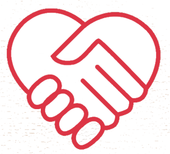
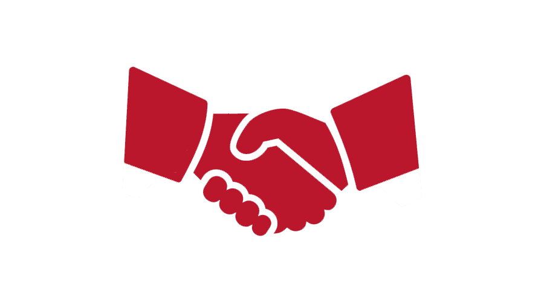

<div class="container">
    <div class="col-12 col-md-7 mx-auto">

        <div class="row mt-4">
            <div class="col-4">
                
            </div>
            <div class="col-8 text-right">
                
            </div>
        </div>
        <div class="row mt-4">
            <div class="col-md-8 mx-auto textInfo">
               <!--  -->
                <h1 class="title text-fluid">Quienes somos</h1>
                <hr>
                <p>Compra Justo es una plataforma que permite vender productos locales, como también poder comprar y encontrarlos de forma rápida y guiada, a través de un mapa con información detallada de cada comercio.</p>
                <p>Aquí se reúnen productores locales y pequeños emprendimientos, para darles mayor visibilidad dentro del mundo tecnológico, incentivando el comercio justo.</p> 
                <p>¿Qué es el comercio justo?
                        Es una forma de comercio alternativa, basada en el diálogo, la transparencia y el respeto, que busca una relación comercial voluntaria, equitativa y justa entre productores y consumidores. Es una iniciativa para crear canales comerciales innovadores, dentro de los cuales la relación entre las partes se orienta al logro de desarrollo sustentable y sostenible de la oferta.</p>
                
            </div>
        </div>
    </div>
</div>